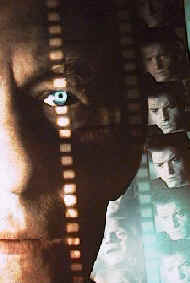

Contents | Features | Reviews | News | Archives | Store

Contents | Features | Reviews | News | Archives | Store
|  | A Son of Frankenstein Speaks ... by Elias Savada |
I marvel at how well he looks considering he is about the give birth.
Say what? Well, his new creation was first shown at the Sundance Film Festival way back in January, in search of a distributor. Many festivals (Seattle, New York, San Sebastian, Mill Valley, etc.) and screenings later, as Condon enters his tenth month of labor awaiting theatrical birth through Lions Gate Films, the results are at hand. Our conversation starts with a brief discussion of the recently concluded San Sebastian event ("a film lover’s festival"), where Ian McKellen won for Best Actor. He notes the "prestigious" New York unreeling, but was blown away by a very positive screening the previous evening as the closing film for the DC Gay and Lesbian Film Festival.
ES: I’m amazed at the performances you got out of your actors! Your rehearsals must have been a lot of fun.
BC: It was great fun, and we did it for three weeks, almost as long as we shot, because we knew we had so little time. That was last June (1997). As we had our location in Los Angeles, so we got to go there. Ian, of course, at the end of a three week rehearsal and four week shoot, said ‘okay, now we’re probably ready to go into previews." For him, that’s a normal [theatrical] rehearsal schedule. He felt like he was just discovering it, and it was over.
ES: I think it would make a fascinating stage drama.
BC: I do, too. I think it could be a real good three hander. Absolutely. It would be fun imagining getting that mood on the stage.
ES: How did you select your actors?
BC: I got the script to Ian. He read it and decided to do it. He became the magnet for the other actors, in a way, but obviously I chose them.
ES: Brandan [Fraser] was a refreshing performance from someone better known for his airhead comedy.
BC: I know! And George [of the Jungle] hadn’t opened yet. It was fun to see him have that success in the middle of our shooting. He was excited by that.
ES: Lynn Redgrave also was refreshing [gee, there’s the geeky interviewer using the same adjective again]. Every time I looked at her I was cracking up. Why the decision to go from Mexican to Hungarian? [in Christopher Bram’s Father of Frankenstein, the basis for the movie, Whale’s devoted housekeeper is Maria; in the film she’s Hanna.]
BC: Two things. First of all, just knowing people who grew up in the movie business at that time, no one had Mexican maids. In Hollywood through the 50s, there were black, English, and Middle European housekeepers and maids. Whale himself actually had two Middle Europeans, one housekeeper, one maid, Anna and Yohanna. Hence these got clashed into Hanna. It just felt, too, that, because of his connection to the war [WWI] between his history and Germany, that to have a dramatic figure like this in the house helped to tie up certain themes. Then there’s a direct line a stock Maria Ouspenskaya [a Slavic-accented, forceful character actress during the 1930s and 1940s] figure. Plus, Lynn has a great ear for accents, immediately getting to know a Hungarian woman. There’s one scene where she’s on the phone and speaking in Hungarian with her daughter. I’m convinced she says ‘They’re paying me enough to get me off this picture.’
ES: Brendan Fraser’s character Clayton Boone frames the film, another enhancement from the novel. What brought that on?
BC: The film opens with Clay opening his eyes and closes with him out in the rain. Even though there are so many different memories and flashback for Whale, it’s almost like him piecing together what it must have been like for Whale just having seen his movie [Bride of Frankenstein]. Interestingly, I did have a few other scenes with Brendan early on and I couldn’t cut to them. He hadn’t earned his right to take us away from Whale. As the movie progresses, you spend more and more time with him because I think he becomes more interesting. It just felt that in the end he deserved an end to his own story.
ES: Lolita Davidovich…
BC: She has a small part. It was a two-day shoot. She liked it. She was in Percy Adlon’s Younger and Younger with Brendan. Now she’s playing Lynn Redgrave mother’s in a film up in Canada.
ES: What was the experience like visiting the Whale house? [Prior to filming, Condon visited the director’s former residence. The current owner, feeling Whale’s presence there, had his spirit exorcised.]
BC: It was great, and a lot of fun. I had actually been in that house before, but it great to go there with Curtis [Harrington] and just walk through and hear the stories. The house [in the film] doesn’t really resemble it.
ES: Your production appears flawless. The ceiling shots, very reminiscent of some of the shots in Citizen Kane. Photography and music add a wonderful blend.
BC: That’s [production designer] Richard Sherman. And thank God for [composer] Carter Burwell.
ES: You’ve worked with a lot of technical people before [Sherman, director of photography Stephen M. Katz, editor Virginia Katz, costume designer Bruce Finlayson, and producer Greg D. Fienberg]. Do you just bring them in, saying it’s time to make another film?
BC: Yeah, basically. Absolutely. It’s such shorthand for all of us now. Carter Burwell was the new one. That was so great to just send him the final cut of the movie and have him say ‘Sure I’ll do it.’ We had so little money [$3.5 million budget]. He was able to get an orchestra score. He made some typically idiosyncratic choices. He went back to [noted Hollywood composer Franz] Waxman’s roots and created this sad waltz, a dirge for that culture destroyed by the first world war. He connected a lot of the dots in the movie.
ES: In the book, chapters represent past and present episodes in Whale’s life. In the film these events are hooked by sound effects and musical and visual cues. It compresses the book and makes it a much better film.
BC: Exactly. It’s a real useful device. The idea of having stabs of memory is a way to do it and take that biopic curse off of it with Whale’s flashbacks.
ES: People are going to think this is real anyway. Your next picture, Vicky Oberjeune: Alone in the Night , has a similar theme. A Judy Garland type chanteuse sprinkled with real characters.
BC: Yes, Garland has an influence on it. A big part was going to be [the late] Roddy McDowall, but it does deal with many contemporaries…Debby Reynolds and others. It used to be associated with HBO, but it’s an independent production. The script is done. [Condon wouldn’t reveal who would produce or star as he was still in negotiations.]
ES: Michael Laughlin directed and co-wrote with you two [horror/sci-fi "cult" films [Dead Kids a.k.a. Strange Behavior (1981) and Strange Invaders (1983)]. What ever happened to him?
BC: The thing about Michael is that he goes away for ten years at a time. In the 60s he produced two films, The Whisperers (1967) and Joanna (1968), followed by Two-Lane Blacktop (1971). He disappeared and then came back with the Strange movies. Now he’s back, having written this Warren Beatty film Town and Country. It’s done and due out in April.
ES: I assume you changed the title of the film so people wouldn’t confuse the film as a horror picture.
BC: Correct. It’s also a gay film. It’s a challenge to market. You both want to get that audience, make sure you’ve gotten them in there, without excluding another audience. The horror crowd can have it’s Bride of Chucky or Vampires. Actually, I loved Chucky. It’s one of the strangest movies I’ve ever seen. The sex scene is hilarious. And, of course, it also mentions Bride of Frankenstein..
Our time spent, your dear nerdy conversationalist graciously had not been asked to remove any clothing during the last half hour . Instead he clumsily presented Condon with a lavish volume on Whale prepared for the 1989 San Sebastian Film Festival. In the moments following his exuberant appreciation of the gift, I was so flummoxed that I forgot to take any photos of our meeting or inscribe the book. As a postscript, my inscription undoubtedly would have read:
‘From a son of Dracula to a son of Frankenstein. May your labors be rewarded when the envelope is opened.’
P.S. Regards to Jimmy.
Be sure to read the full review, Sean Axmaker's interview, and the coverage of the film at the Seattle International Film Festival ...
Contents | Features | Reviews | News | Archives | Store
Copyright © 1999 by Nitrate Productions, Inc. All Rights Reserved.